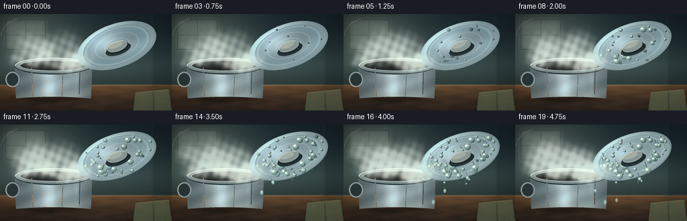
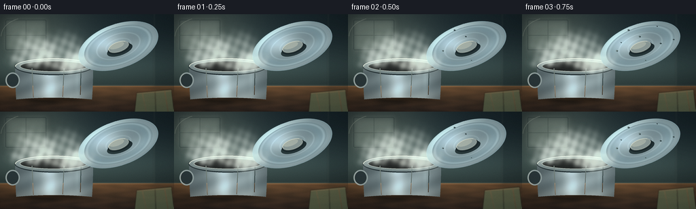
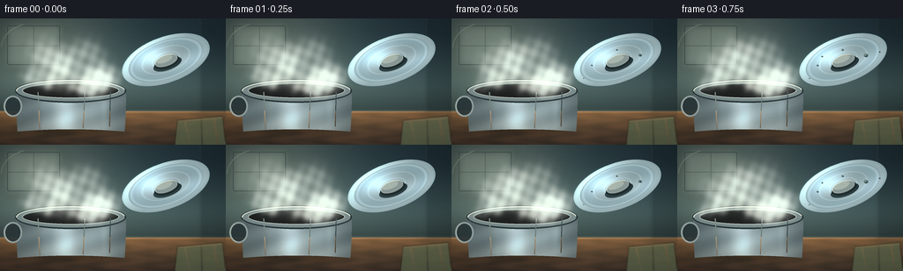
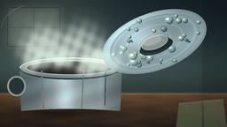
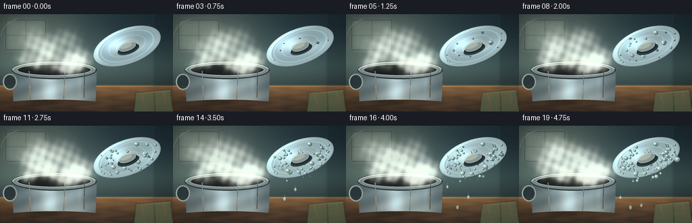
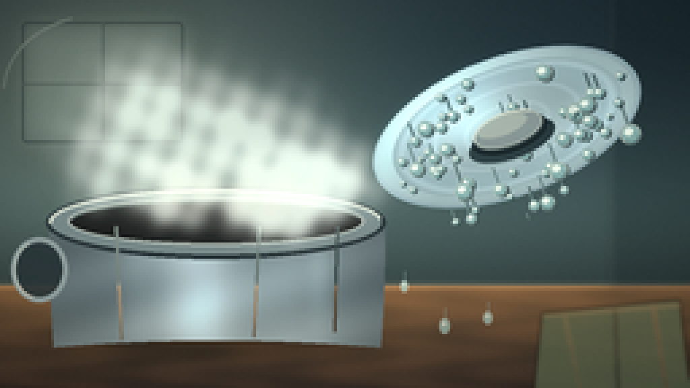
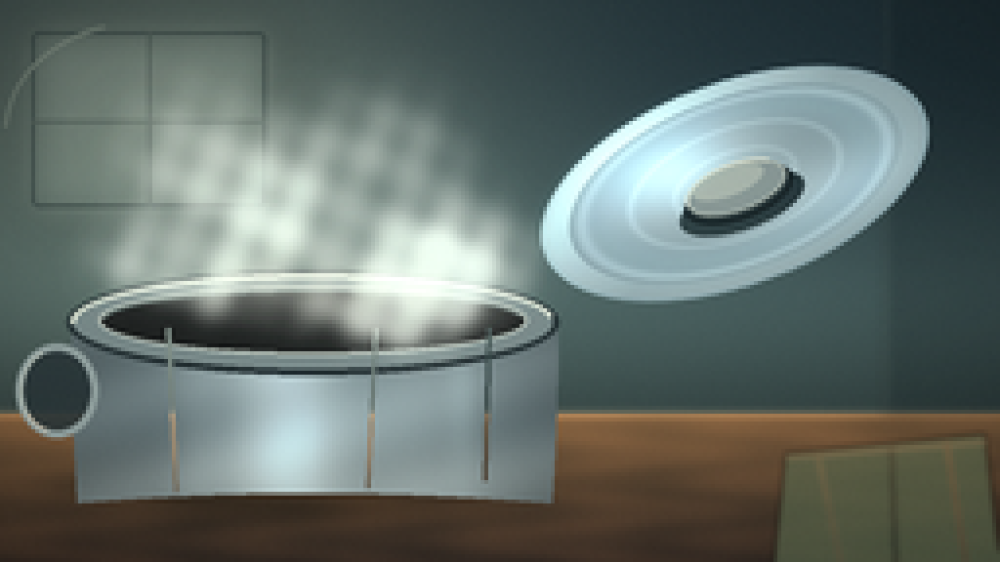
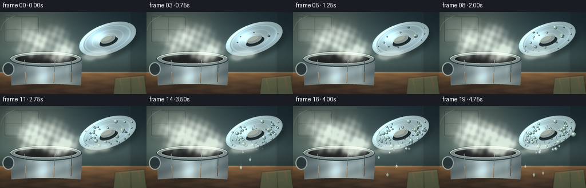
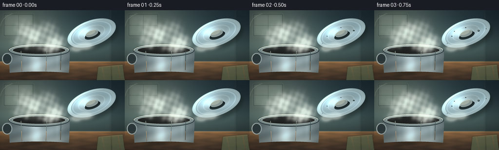

CODING AGENTS AS PIXEL WORLD MODELS
traex/DeepSeek-V4.1-Flash · phygen_103
点击播放 · 原生 RGB 像素
逐轮保存的候选
回放视频、检查图与代码变化。
每份候选均可单独播放。实际图片检查记录在下方工具轨迹中。
候选 01播放与检查图
点击播放 · 原生 RGB 像素


展开代码变化
--- 上一保存版本
+++ 本次保存版本
@@ -0,0 +1,718 @@
+#!/usr/bin/env python3
+"""Procedural timelapse of steam condensing on a cool metal pot lid."""
+
+from pathlib import Path
+import math
+
+import numpy as np
+from PIL import Image, ImageDraw, ImageFilter
+
+import artifact_io
+
+
+ROOT = Path(__file__).resolve().parent
+W, H = 256, 144
+N = 20
+FPS = 4.0
+S = 4
+FW, FH = W * S, H * S
+TAU = math.tau
+
+
+def smoothstep(x):
+ x = np.clip(x, 0.0, 1.0)
+ return x * x * (3.0 - 2.0 * x)
+
+
+def mix(a, b, t):
+ return a + (b - a) * t
+
+
+def make_grid():
+ yy, xx = np.mgrid[0:FH, 0:FW]
+ return xx / S, yy / S
+
+
+GX, GY = make_grid()
+
+
+def paste_rgba(base, overlay, xy=(0, 0)):
+ base.paste(overlay, xy, overlay)
+ return base
+
+
+def make_background():
+ x = GX / W
+ y = GY / H
+
+ # A quiet kitchen wall: cool, slightly green-grey above a warm wooden counter.
+ wall_top = np.array([24.0, 37.0, 43.0])
+ wall_mid = np.array([58.0, 77.0, 77.0])
+ wall_low = np.array([91.0, 104.0, 96.0])
+ wall = np.zeros((FH, FW, 3), dtype=np.float32)
+ low_mix = smoothstep((y - 0.06) / 0.64)
+ wall[:] = wall_top
+ wall = wall * (1.0 - low_mix[..., None]) + wall_mid * low_mix[..., None]
+ wall = wall * (1.0 - 0.32 * smoothstep((y - 0.48) / 0.30)[..., None])
+ wall = wall * (1.0 - 0.18 * smoothstep((y - 0.70) / 0.22)[..., None])
+
+ # Daylight spill from a soft window at upper left.
+ light = np.exp(
+ -(((x - 0.15) / 0.40) ** 2 + ((y - 0.17) / 0.44) ** 2) * 1.5
+ )
+ wall += light[..., None] * np.array([42.0, 43.0, 34.0])
+
+ # Counter surface, with restrained grain and a warm reflected sheen.
+ counter = np.zeros((FH, FW, 3), dtype=np.float32)
+ depth = np.clip((GY - 106.0) / 38.0, 0.0, 1.0)
+ near = np.array([91.0, 67.0, 45.0])
+ far = np.array([42.0, 34.0, 30.0])
+ counter[:] = near * (1.0 - depth[..., None]) + far * depth[..., None]
+ grain = (
+ 0.50
+ + 0.20 * np.sin(GX * 0.095 + 1.8 * np.sin(GY * 0.42))
+ + 0.12 * np.sin(GX * 0.043 - GY * 0.17)
+ + 0.08 * np.sin(GX * 0.21 + 0.7)
+ )
+ counter += (grain[..., None] - 0.5) * np.array([20.0, 12.0, 7.0])
+ counter += np.exp(
+ -(((GX - 62.0) / 54.0) ** 2 + ((GY - 111.0) / 12.0) ** 2)
+ )[..., None] * np.array([20.0, 13.0, 6.0])
+
+ ground = GY >= 106.0
+ wall = wall * (~ground[..., None]) + counter * ground[..., None]
+
+ # Pot contact shadow, kept soft so it reads as an object sitting on the counter.
+ shadow = np.exp(
+ -(((GX - 78.0) / 63.0) ** 2 + ((GY - 126.0) / 8.0) ** 2) * 1.5
+ )
+ wall -= shadow[..., None] * np.array([35.0, 25.0, 18.0])
+
+ # Counter back edge catches a narrow line of window light.
+ edge = np.exp(-((GY - 106.0) / 1.4) ** 2)
+ wall += edge[..., None] * np.array([30.0, 23.0, 16.0])
+
+ # Gentle vignette and a very slight cool shadow at the corners.
+ vignette = np.clip(
+ 1.08 - 0.30 * (((x - 0.50) / 0.70) ** 2 + ((y - 0.47) / 0.75) ** 2),
+ 0.72,
+ 1.08,
+ )
+ wall *= vignette[..., None]
+ arr = np.uint8(np.clip(wall, 0, 255))
+ image = Image.fromarray(arr, "RGB").convert("RGBA")
+
+ # Soft out-of-focus window and frame, intentionally secondary to the objects.
+ glow = Image.new("RGBA", (FW, FH), (0, 0, 0, 0))
+ gd = ImageDraw.Draw(glow)
+ gd.rounded_rectangle(
+ (5 * S, 5 * S, 72 * S, 57 * S),
+ radius=4 * S,
+ fill=(184, 199, 187, 54),
+ outline=(153, 169, 159, 38),
+ width=2 * S,
+ )
+ glow = glow.filter(ImageFilter.GaussianBlur(5 * S))
+ image = Image.alpha_composite(image, glow)
+
+ window = Image.new("RGBA", (FW, FH), (0, 0, 0, 0))
+ wd = ImageDraw.Draw(window)
+ wd.rounded_rectangle(
+ (8 * S, 8 * S, 68 * S, 53 * S),
+ radius=2 * S,
+ outline=(26, 39, 41, 105),
+ width=max(1, int(1.2 * S)),
+ )
+ wd.line((38 * S, 8 * S, 38 * S, 53 * S), fill=(31, 43, 43, 72), width=max(1, S))
+ wd.line((8 * S, 31 * S, 68 * S, 31 * S), fill=(31, 43, 43, 65), width=max(1, S))
+ wd.arc(
+ (1 * S, 5 * S, 75 * S, 62 * S),
+ 182,
+ 252,
+ fill=(207, 216, 196, 42),
+ width=max(1, S),
+ )
+ image = Image.alpha_composite(image, window)
+
+ # A dark cabinet edge gives the upper right a little depth without stealing focus.
+ cabinet = Image.new("RGBA", (FW, FH), (0, 0, 0, 0))
+ cd = ImageDraw.Draw(cabinet)
+ cd.rectangle((226 * S, 0, FW, 106 * S), fill=(17, 28, 31, 62))
+ cd.line((226 * S, 0, 226 * S, 106 * S), fill=(129, 142, 128, 38), width=max(1, S))
+ cabinet = cabinet.filter(ImageFilter.GaussianBlur(1.2 * S))
+ image = Image.alpha_composite(image, cabinet)
+
+ # A muted folded towel at lower right helps establish scale and kitchen context.
+ towel = Image.new("RGBA", (FW, FH), (0, 0, 0, 0))
+ td = ImageDraw.Draw(towel)
+ td.polygon(
+ [
+ (201 * S, 116 * S),
+ (252 * S, 111 * S),
+ (256 * S, 144 * S),
+ (198 * S, 144 * S),
+ ],
+ fill=(83, 96, 73, 185),
+ )
+ td.line((209 * S, 116 * S, 215 * S, 144 * S), fill=(127, 130, 97, 85), width=S)
+ td.line((228 * S, 114 * S, 229 * S, 144 * S), fill=(47, 63, 51, 105), width=S)
+ td.line((242 * S, 113 * S, 247 * S, 144 * S), fill=(139, 128, 93, 65), width=S)
+ td.line((201 * S, 117 * S, 253 * S, 113 * S), fill=(160, 148, 111, 95), width=S)
+ towel = towel.filter(ImageFilter.GaussianBlur(0.7 * S))
+ image = Image.alpha_composite(image, towel)
+
+ return image.convert("RGB")
+
+
+def make_pot():
+ ax, ay = GX, GY
+ x0, x1 = 22.0, 137.0
+ y0, y1 = 76.0, 126.0
+ yn = np.clip((ay - y0) / (y1 - y0), 0.0, 1.0)
+ left = x0 + 1.7 * yn * yn
+ right = x1 - 1.7 * yn * yn
+ bottom = 126.0 - 2.7 * (1.0 - np.clip((ax - 79.0) / 57.0, -1.0, 1.0) ** 2)
+ body = (ax >= left) & (ax <= right) & (ay >= y0) & (ay <= bottom)
+
+ u = (ax - 79.0) / 57.0
+ v = np.clip((ay - y0) / 50.0, 0.0, 1.0)
+ lum = (
+ 0.33
+ + 0.40 * np.exp(-(((u + 0.13) / 0.25) ** 2))
+ + 0.18 * np.exp(-(((u - 0.47) / 0.33) ** 2))
+ + 0.07 * np.exp(-(((u + 0.48) / 0.10) ** 2))
+ )
+ lum *= 0.86 + 0.14 * (1.0 - np.abs(np.clip(u, -1.0, 1.0)))
+ lum += 0.055 * np.sin(v * 12.0 + u * 5.0)
+ rgb = np.array([65.0, 81.0, 87.0]) + lum[..., None] * np.array(
+ [160.0, 168.0, 169.0]
+ )
+ # Warm counter reflection along the lower body.
+ rgb += (smoothstep((ay - 107.0) / 17.0) * 0.30)[..., None] * np.array(
+ [31.0, 18.0, 7.0]
+ )
+ # Darker sidewalls and a cool reflected edge.
+ rgb *= (0.78 + 0.22 * (1.0 - np.abs(np.clip(u, -1.0, 1.0))))[..., None]
+ rgb += (
+ 0.10
+ * np.exp(-(((u - 0.62) / 0.07) ** 2))
+ * np.exp(-(((v - 0.42) / 0.45) ** 2))
+ )[..., None] * np.array([135.0, 157.0, 160.0])
+
+ arr = np.zeros((FH, FW, 4), dtype=np.uint8)
+ arr[..., :3] = np.uint8(np.clip(rgb, 0, 255))
+ arr[..., 3] = np.uint8(body * 255)
+ pot = Image.fromarray(arr, "RGBA")
+ d = ImageDraw.Draw(pot)
+
+ # Side handle, partly behind the vessel.
+ d.ellipse(
+ (8 * S, 86 * S, 29 * S, 109 * S),
+ fill=(39, 51, 55, 230),
+ outline=(135, 151, 153, 255),
+ width=max(2, int(2.2 * S)),
+ )
+ d.arc(
+ (9 * S, 87 * S, 28 * S, 108 * S),
+ 105,
+ 245,
+ fill=(201, 211, 207, 180),
+ width=max(1, S),
+ )
+
+ # Rim and dark opening.
+ d.ellipse(
+ (21 * S, 64 * S, 137 * S, 90 * S),
+ fill=(113, 130, 133, 255),
+ outline=(38, 50, 54, 255),
+ width=max(2, int(1.8 * S)),
+ )
+ d.ellipse(
+ (29 * S, 68 * S, 129 * S, 85 * S),
+ fill=(28, 31, 31, 255),
+ outline=(174, 185, 181, 235),
+ width=max(1, int(1.15 * S)),
+ )
+ d.arc(
+ (22 * S, 65 * S, 136 * S, 89 * S),
+ 178,
+ 352,
+ fill=(222, 229, 219, 210),
+ width=max(2, int(1.6 * S)),
+ )
+ d.arc(
+ (30 * S, 69 * S, 128 * S, 84 * S),
+ 185,
+ 350,
+ fill=(93, 108, 108, 220),
+ width=max(1, S),
+ )
+
+ # Narrow vertical highlights on the polished body.
+ d.line(
+ (47 * S, 80 * S, 49 * S, 123 * S),
+ fill=(206, 216, 210, 90),
+ width=max(1, int(1.25 * S)),
+ )
+ d.line(
+ (94 * S, 80 * S, 92 * S, 122 * S),
+ fill=(224, 230, 222, 56),
+ width=max(1, S),
+ )
+ d.line(
+ (119 * S, 80 * S, 118 * S, 119 * S),
+ fill=(21, 33, 37, 75),
+ width=max(1, int(1.1 * S)),
+ )
+ return pot
+
+
+LW, LH = 580, 340
+LCX, LCY = LW // 2, LH // 2
+LRX, LRY = 245.0, 130.0
+
+
+def lid_coords():
+ yy, xx = np.mgrid[0:LH, 0:LW]
+ nx = (xx - LCX) / LRX
+ ny = (yy - LCY) / LRY
+ rr = np.sqrt(nx * nx + ny * ny)
+ return nx, ny, rr
+
+
+LNX, LNY, LRR = lid_coords()
+
+
+def make_lid_base():
+ nx, ny, rr = LNX, LNY, LRR
+ inside = rr <= 1.0
+ rim = rr > 0.855
+ edge = rr > 0.975
+
+ lum = (
+ 0.29
+ + 0.45
+ * np.exp(
+ -(
+ ((nx + 0.28) / 0.43) ** 2
+ + ((ny + 0.32) / 0.48) ** 2
+ )
+ )
+ + 0.18
+ * np.exp(
+ -(
+ ((nx - 0.38) / 0.50) ** 2
+ + ((ny - 0.34) / 0.34) ** 2
+ )
+ )
+ )
+ lum += 0.17 * np.exp(-((rr - 0.79) / 0.035) ** 2)
+ lum += 0.11 * np.exp(-((rr - 0.54) / 0.020) ** 2)
+ lum += 0.09 * np.exp(-((rr - 0.31) / 0.018) ** 2)
+ lum += rim * (0.09 + 0.07 * np.clip((-ny - nx) * 0.8, 0.0, 1.0))
+ lum += edge * 0.10
+
+ rgb = np.array([61.0, 78.0, 85.0]) + lum[..., None] * np.array(
+ [147.0, 157.0, 160.0]
+ )
+ # Cool metal tint, with a thin warm reflection near the lower edge.
+ rgb += np.exp(-((rr - 0.70) / 0.16) ** 2)[..., None] * np.array(
+ [4.0, 10.0, 13.0]
+ )
+ rgb += (
+ smoothstep((ny - 0.28) / 0.70) * np.exp(-((nx + 0.18) / 0.58) ** 2) * 0.20
+ )[..., None] * np.array([28.0, 20.0, 12.0])
+ # Darker rolled edge, with a restrained highlight.
+ rgb[edge] = rgb[edge] * 0.62 + np.array([36.0, 48.0, 52.0])
+ rim_light = np.clip((-ny - nx) * 0.9, 0.0, 1.0) * rim
+ rgb += rim_light[..., None] * np.array([37.0, 40.0, 37.0])
+
+ arr = np.zeros((LH, LW, 4), dtype=np.uint8)
+ arr[..., :3] = np.uint8(np.clip(rgb, 0, 255))
+ arr[..., 3] = np.uint8(inside * 255)
+ base = Image.fromarray(arr, "RGBA")
+ return base
+
+
+LID_BASE = make_lid_base()
+
+
+def draw_knob(layer, opacity=255):
+ d = ImageDraw.Draw(layer)
+ # Soft seat under the knob.
+ d.ellipse(
+ (LCX - 78, LCY - 7, LCX + 78, LCY + 56),
+ fill=(18, 29, 32, int(92 * opacity / 255)),
+ )
+ d.ellipse(
+ (LCX - 68, LCY - 18, LCX + 68, LCY + 43),
+ fill=(43, 57, 62, int(245 * opacity / 255)),
+ outline=(17, 27, 30, int(230 * opacity / 255)),
+ width=4,
+ )
+ d.ellipse(
+ (LCX - 62, LCY - 23, LCX + 62, LCY + 34),
+ fill=(130, 145, 146, int(250 * opacity / 255)),
+ outline=(204, 212, 204, int(180 * opacity / 255)),
+ width=3,
+ )
+ d.ellipse(
+ (LCX - 53, LCY - 22, LCX + 37, LCY + 11),
+ fill=(205, 215, 207, int(175 * opacity / 255)),
+ )
+ d.arc(
+ (LCX - 63, LCY - 24, LCX + 63, LCY + 35),
+ 178,
+ 320,
+ fill=(239, 242, 228, int(205 * opacity / 255)),
+ width=3,
+ )
+ d.arc(
+ (LCX - 64, LCY - 20, LCX + 64, LCY + 38),
+ 15,
+ 162,
+ fill=(38, 51, 54, int(220 * opacity / 255)),
+ width=4,
+ )
+ return layer
+
+
+def make_drops():
+ rng = np.random.default_rng(103)
+ drops = []
+ for i in range(62):
+ theta = rng.uniform(0.0, TAU)
+ radius = math.sqrt(rng.uniform(0.015, 0.84))
+ x = LCX + LRX * radius * math.cos(theta)
+ y = LCY + LRY * radius * math.sin(theta)
+ if abs(x - LCX) < 95 and abs(y - LCY) < 40:
+ continue
+ size = rng.uniform(5.0, 12.0)
+ if rng.random() < 0.19:
+ size *= rng.uniform(1.45, 2.05)
+ start = 0.06 + rng.random() * 0.72
+ slide_start = 10.0
+ slide_distance = 0.0
+ if rng.random() < 0.28:
+ slide_start = 0.38 + rng.random() * 0.34
+ slide_distance = rng.uniform(24.0, 74.0)
+ drops.append(
+ {
+ "x": x,
+ "y": y,
+ "r": size,
+ "start": start,
+ "slide_start": slide_start,
+ "slide": slide_distance,
+ "phase": rng.uniform(0.0, TAU),
+ }
+ )
+
+ # A few prominent beads placed by eye, so the condensation reads at 256 px.
+ hero = [
+ (-0.47, 0.23, 17.0, 0.26, 0.57, 58.0),
+ (-0.18, 0.48, 14.0, 0.18, 0.52, 44.0),
+ (0.25, 0.43, 19.0, 0.34, 0.64, 55.0),
+ (0.48, 0.19, 12.0, 0.15, 0.49, 35.0),
+ (-0.57, -0.15, 11.0, 0.10, 0.46, 29.0),
+ (0.06, -0.42, 9.0, 0.08, 0.41, 24.0),
+ ]
+ for nx, ny, size, start, slide_start, slide in hero:
+ drops.append(
+ {
+ "x": LCX + LRX * nx,
+ "y": LCY + LRY * ny,
+ "r": size,
+ "start": start,
+ "slide_start": slide_start,
+ "slide": slide,
+ "phase": (nx + ny) * 4.0,
+ }
+ )
+ return drops
+
+
+DROPS = make_drops()
+
+
+def draw_droplet(d, x, y, rx, ry, alpha):
+ # A dark contact shadow, translucent water body, then a small hard highlight.
+ d.ellipse(
+ (x - rx + 2.0, y - ry + 2.0, x + rx + 2.0, y + ry + 2.0),
+ fill=(24, 43, 46, int(95 * alpha)),
+ )
+ d.ellipse(
+ (x - rx, y - ry, x + rx, y + ry),
+ fill=(150, 194, 193, int(190 * alpha)),
+ outline=(221, 238, 228, int(160 * alpha)),
+ width=max(1, int(0.22 * rx)),
+ )
+ d.ellipse(
+ (x - rx * 0.58, y - ry * 0.68, x + rx * 0.36, y + ry * 0.05),
+ fill=(238, 250, 242, int(225 * alpha)),
+ )
+ d.arc(
+ (x - rx * 0.90, y - ry * 0.90, x + rx * 0.90, y + ry * 0.90),
+ 20,
+ 145,
+ fill=(60, 92, 96, int(145 * alpha)),
+ width=max(1, int(0.18 * rx)),
+ )
+
+
+def make_lid_frame(u):
+ frame = LID_BASE.copy()
+ inside = (LRR <= 0.955).astype(np.float32)
+
+ # Condensation film builds gradually and is slightly stronger toward the rim.
+ film = (
+ 0.025
+ + 0.17 * smoothstep((u - 0.08) / 0.82)
+ + 0.035 * smoothstep((LRR - 0.58) / 0.34)
+ )
+ film *= inside
+ film_rgb = np.zeros((LH, LW, 3), dtype=np.uint8)
+ film_rgb[:] = np.array([187, 215, 210], dtype=np.uint8)
+ film_a = np.uint8(np.clip(film * 255.0, 0, 255))
+ film_layer = Image.fromarray(np.dstack([film_rgb, film_a]), "RGBA")
+ frame = Image.alpha_composite(frame, film_layer)
+
+ d = ImageDraw.Draw(frame)
+ for drop in DROPS:
+ age = (u - drop["start"]) / 0.24
+ if age <= 0.0:
+ continue
+ grow = smoothstep(age)
+ slide_t = 0.0
+ slide_y = 0.0
+ if drop["slide"] > 0.0 and u > drop["slide_start"]:
+ slide_t = smoothstep((u - drop["slide_start"]) / 0.32)
+ slide_y = drop["slide"] * slide_t
+ slide_x = 5.0 * math.sin(drop["phase"] + slide_t * 3.0) * slide_t
+ else:
+ slide_x = 0.0
+
+ x = drop["x"] + slide_x
+ y = drop["y"] + slide_y
+ rx = drop["r"] * (0.35 + 0.65 * grow)
+ ry = rx * (0.86 + 0.12 * grow)
+ alpha = min(1.0, 0.25 + 0.75 * grow)
+
+ if slide_t > 0.0:
+ trail = min(slide_y, rx * 3.8)
+ d.line(
+ (x + 1.5, y - trail + 1.5, x + 1.5, y + 1.5),
+ fill=(23, 43, 47, int(80 * alpha)),
+ width=max(2, int(rx * 0.24)),
+ )
+ d.line(
+ (x, y - trail, x, y),
+ fill=(185, 220, 216, int(120 * alpha)),
+ width=max(2, int(rx * 0.22)),
+ )
+ draw_droplet(d, x, y, rx, ry, alpha)
+
+ # Re-apply the knob so water never appears painted over the handle.
+ draw_knob(frame)
+ return frame
+
+
+def gaussian(field, cx, cy, rx, ry, amp):
+ return field + amp * np.exp(
+ -0.5 * (((GX_HALF - cx) / rx) ** 2 + ((GY_HALF - cy) / ry) ** 2)
+ )
+
+
+SW, SH = FW // 2, FH // 2
+GX_HALF, GY_HALF = np.meshgrid(
+ np.linspace(0.0, W, SW, endpoint=False),
+ np.linspace(0.0, H, SH, endpoint=False),
+)
+
+
+def make_steam(u, foreground=False):
+ field = np.zeros((SH, SW), dtype=np.float32)
+ intensity = 0.58 + 0.42 * smoothstep(u)
+
+ # Main plume: puffs are distributed through a rising, looping life cycle.
+ for j in range(18):
+ phase = (u * 0.62 + j / 18.0) % 1.0
+ x = (
+ 58.0
+ + 26.0 * math.sin(j * 1.71 + 0.6)
+ + 12.0 * math.sin(j * 0.93 + u * 7.0)
+ + 8.0 * phase
+ )
+ y = 76.0 - 38.0 * phase + 2.2 * math.sin(j * 2.4 + u * 11.0)
+ rx = 6.0 + 6.5 * phase
+ ry = 4.0 + 7.0 * phase
+ amp = (
+ (0.34 + 0.32 * (0.5 + 0.5 * math.sin(j * 2.2 + 1.0)))
+ * (0.32 + 0.68 * math.sin(math.pi * phase) ** 0.65)
+ * intensity
+ )
+ field = gaussian(field, x, y, rx, ry, amp)
+
+ # A denser curl where the rising steam meets the lid's lower edge.
+ for j in range(11):
+ phase = (u * 0.86 + j / 11.0) % 1.0
+ x = (
+ 96.0
+ + 30.0 * phase
+ + 7.0 * math.sin(j * 1.8 + u * 8.0)
+ )
+ y = 78.0 - 15.0 * phase + 3.0 * math.sin(j * 1.3 + u * 9.0)
+ rx = 7.0 + 4.0 * phase
+ ry = 4.5 + 3.5 * phase
+ amp = (
+ (0.30 + 0.30 * math.sin(math.pi * phase) ** 0.7)
+ * (0.75 + 0.25 * math.sin(j * 1.6))
+ * intensity
+ )
+ field = gaussian(field, x, y, rx, ry, amp)
+
+ # A few thin wisps escaping around the left side of the lid.
+ for j in range(6):
+ phase = (u * 0.7 + j / 6.0) % 1.0
+ x = 118.0 - 12.0 * phase + 3.0 * math.sin(j * 2.0 + u * 8.0)
+ y = 74.0 - 39.0 * phase
+ amp = 0.16 * (0.3 + 0.7 * math.sin(math.pi * phase) ** 0.8) * intensity
+ field = gaussian(field, x, y, 5.0 + 3.0 * phase, 3.0 + 4.0 * phase, amp)
+
+ # Break up the otherwise smooth Gaussian field with a soft, low-frequency texture.
+ texture = (
+ 0.72
+ + 0.16 * np.sin(GX_HALF * 0.48 + GY_HALF * 0.17 + u * 3.0)
+ + 0.12 * np.sin(GX_HALF * 0.20 - GY_HALF * 0.43 - u * 2.0)
+ )
+ field *= np.clip(texture, 0.45, 1.10)
+
+ if foreground:
+ # Only the lower contact zone is composited over the lid, keeping the metal readable.
+ mask = (
+ smoothstep((GY_HALF - 48.0) / 30.0)
+ * (1.0 - smoothstep((GX_HALF - 150.0) / 62.0))
+ * (1.0 - smoothstep((GY_HALF - 103.0) / 18.0))
+ )
+ field *= mask
+
+ alpha = 1.0 - np.exp(-field * 1.55)
+ alpha = np.clip(alpha, 0.0, 0.70 if not foreground else 0.46)
+ alpha_img = Image.fromarray(np.uint8(alpha * 255), "L").filter(
+ ImageFilter.GaussianBlur(1.6)
+ )
+ alpha = np.asarray(alpha_img, dtype=np.float32) / 255.0
+
+ # Cool-white steam with a faint warm bounce near the pot mouth.
+ rgb = np.zeros((SH, SW, 3), dtype=np.float32)
+ rgb[:] = np.array([218.0, 231.0, 228.0])
+ warm = np.exp(
+ -(((GX_HALF - 74.0) / 32.0) ** 2 + ((GY_HALF - 74.0) / 15.0) ** 2)
+ )
+ rgb = rgb * (1.0 - 0.20 * warm[..., None]) + np.array([236.0, 226.0, 207.0]) * (
+ 0.20 * warm[..., None]
+ )
+ core = np.clip((field - 0.72) / 0.8, 0.0, 1.0) * (0.28 if not foreground else 0.20)
+ rgb = rgb * (1.0 - core[..., None]) + np.array([247.0, 249.0, 240.0]) * core[..., None]
+
+ arr = np.dstack([np.uint8(np.clip(rgb, 0, 255)), np.uint8(alpha * 255)])
+ steam = Image.fromarray(arr, "RGBA").resize((FW, FH), Image.Resampling.BICUBIC)
+ return steam
+
+
+def draw_falling_drops(base, u):
+ layer = Image.new("RGBA", (FW, FH), (0, 0, 0, 0))
+ d = ImageDraw.Draw(layer)
+ drops = [
+ (0.60, 134.0, 82.0, 2.1, 34.0),
+ (0.72, 151.0, 86.0, 1.8, 27.0),
+ (0.82, 119.0, 81.0, 1.5, 22.0),
+ ]
+ for start, x, y0, r, distance in drops:
+ if u <= start:
+ continue
+ p = smoothstep((u - start) / 0.25)
+ y = y0 + distance * p
+ alpha = 0.88 * (1.0 - 0.20 * smoothstep((p - 0.7) / 0.3))
+ rx, ry = r * S, (r * 1.55) * S
+ cx, cy = x * S, y * S
+ d.line(
+ (cx + 2, cy - ry * 2.4 + 2, cx + 2, cy + 2),
+ fill=(28, 45, 48, int(75 * alpha)),
+ width=max(1, int(0.8 * S)),
+ )
+ d.line(
+ (cx, cy - ry * 2.4, cx, cy),
+ fill=(183, 221, 217, int(110 * alpha)),
+ width=max(1, int(0.65 * S)),
+ )
+ d.ellipse(
+ (cx - rx, cy - ry, cx + rx, cy + ry),
+ fill=(158, 204, 202, int(205 * alpha)),
+ outline=(232, 244, 235, int(185 * alpha)),
+ width=max(1, int(0.45 * S)),
+ )
+ d.ellipse(
+ (cx - rx * 0.45, cy - ry * 0.55, cx + rx * 0.25, cy + ry * 0.03),
+ fill=(241, 251, 243, int(225 * alpha)),
+ )
+ return Image.alpha_composite(base.convert("RGBA"), layer)
+
+
+def post_process(image, u, frame_index):
+ arr = np.asarray(image, dtype=np.float32)
+
+ # A restrained bloom around the hottest steam and metal highlights.
+ bright = np.clip((arr - 188.0) / 67.0, 0.0, 1.0)
+ bloom_src = Image.fromarray(np.uint8(bright * 255), "RGB")
+ bloom = bloom_src.filter(ImageFilter.GaussianBlur(7.0))
+ arr += np.asarray(bloom, dtype=np.float32) * 0.13
+
+ # Subtle warm/cool grade and vignette.
+ arr[..., 0] *= 1.015
+ arr[..., 1] *= 1.005
+ arr[..., 2] *= 0.985
+ vignette = np.clip(
+ 1.06 - 0.16 * (((GX / W - 0.5) / 0.70) ** 2 + ((GY / H - 0.47) / 0.76) ** 2),
+ 0.84,
+ 1.05,
+ )
+ arr *= vignette[..., None]
+
+ # Fixed, very light sensor grain avoids flat gradients after downsampling.
+ rng = np.random.default_rng(9000 + frame_index)
+ grain = rng.normal(0.0, 1.8, (FH, FW, 1))
+ arr += grain
+ return Image.fromarray(np.uint8(np.clip(arr, 0, 255)), "RGB").resize(
+ (W, H), Image.Resampling.LANCZOS
+ )
+
+
+def render():
+ bg = make_background()
+ pot = make_pot()
+ frames = []
+ for i in range(N):
+ u = i / (N - 1)
+ image = bg.copy()
+ image = paste_rgba(image.convert("RGBA"), pot)
+
+ # Steam is mostly behind the lid; a second, weaker layer spills across its edge.
+ image = Image.alpha_composite(image, make_steam(u, foreground=False))
+ lid = make_lid_frame(u).rotate(
+ 19.5, resample=Image.Resampling.BICUBIC, expand=True
+ )
+ lid_x = int(round(174 * S - lid.width / 2))
+ lid_y = int(round(47 * S - lid.height / 2))
+ image = paste_rgba(image, lid, (lid_x, lid_y))
+ image = Image.alpha_composite(image, make_steam(u, foreground=True))
+ image = draw_falling_drops(image, u)
+ frames.append(np.asarray(post_process(image.convert("RGB"), u, i)))
+
+ return np.stack(frames, axis=0)
+
+
+if __name__ == "__main__":
+ frames = render()
+ artifact_io.save(frames, ROOT)
+ print(f"wrote {frames.shape} frames to {ROOT}")
候选 02播放与检查图
点击播放 · 原生 RGB 像素


展开代码变化
--- 上一保存版本
+++ 本次保存版本
@@ -46,9 +46,9 @@
y = GY / H
# A quiet kitchen wall: cool, slightly green-grey above a warm wooden counter.
- wall_top = np.array([24.0, 37.0, 43.0])
- wall_mid = np.array([58.0, 77.0, 77.0])
- wall_low = np.array([91.0, 104.0, 96.0])
+ wall_top = np.array([31.0, 48.0, 56.0])
+ wall_mid = np.array([70.0, 92.0, 93.0])
+ wall_low = np.array([99.0, 115.0, 106.0])
wall = np.zeros((FH, FW, 3), dtype=np.float32)
low_mix = smoothstep((y - 0.06) / 0.64)
wall[:] = wall_top
@@ -58,15 +58,15 @@
# Daylight spill from a soft window at upper left.
light = np.exp(
- -(((x - 0.15) / 0.40) ** 2 + ((y - 0.17) / 0.44) ** 2) * 1.5
- )
- wall += light[..., None] * np.array([42.0, 43.0, 34.0])
+ -(((x - 0.15) / 0.44) ** 2 + ((y - 0.17) / 0.48) ** 2) * 1.4
+ )
+ wall += light[..., None] * np.array([54.0, 52.0, 39.0])
# Counter surface, with restrained grain and a warm reflected sheen.
counter = np.zeros((FH, FW, 3), dtype=np.float32)
depth = np.clip((GY - 106.0) / 38.0, 0.0, 1.0)
- near = np.array([91.0, 67.0, 45.0])
- far = np.array([42.0, 34.0, 30.0])
+ near = np.array([119.0, 89.0, 60.0])
+ far = np.array([57.0, 46.0, 39.0])
counter[:] = near * (1.0 - depth[..., None]) + far * depth[..., None]
grain = (
0.50
@@ -74,7 +74,7 @@
+ 0.12 * np.sin(GX * 0.043 - GY * 0.17)
+ 0.08 * np.sin(GX * 0.21 + 0.7)
)
- counter += (grain[..., None] - 0.5) * np.array([20.0, 12.0, 7.0])
+ counter += (grain[..., None] - 0.5) * np.array([27.0, 16.0, 9.0])
counter += np.exp(
-(((GX - 62.0) / 54.0) ** 2 + ((GY - 111.0) / 12.0) ** 2)
)[..., None] * np.array([20.0, 13.0, 6.0])
@@ -84,13 +84,13 @@
# Pot contact shadow, kept soft so it reads as an object sitting on the counter.
shadow = np.exp(
- -(((GX - 78.0) / 63.0) ** 2 + ((GY - 126.0) / 8.0) ** 2) * 1.5
- )
- wall -= shadow[..., None] * np.array([35.0, 25.0, 18.0])
+ -(((GX - 78.0) / 65.0) ** 2 + ((GY - 126.0) / 9.0) ** 2) * 1.4
+ )
+ wall -= shadow[..., None] * np.array([31.0, 22.0, 16.0])
# Counter back edge catches a narrow line of window light.
edge = np.exp(-((GY - 106.0) / 1.4) ** 2)
- wall += edge[..., None] * np.array([30.0, 23.0, 16.0])
+ wall += edge[..., None] * np.array([40.0, 30.0, 20.0])
# Gentle vignette and a very slight cool shadow at the corners.
vignette = np.clip(
@@ -166,16 +166,16 @@
def make_pot():
ax, ay = GX, GY
- x0, x1 = 22.0, 137.0
- y0, y1 = 76.0, 126.0
+ x0, x1 = 18.0, 143.0
+ y0, y1 = 80.0, 129.0
yn = np.clip((ay - y0) / (y1 - y0), 0.0, 1.0)
left = x0 + 1.7 * yn * yn
right = x1 - 1.7 * yn * yn
- bottom = 126.0 - 2.7 * (1.0 - np.clip((ax - 79.0) / 57.0, -1.0, 1.0) ** 2)
+ bottom = 129.0 - 2.7 * (1.0 - np.clip((ax - 80.0) / 62.0, -1.0, 1.0) ** 2)
body = (ax >= left) & (ax <= right) & (ay >= y0) & (ay <= bottom)
- u = (ax - 79.0) / 57.0
- v = np.clip((ay - y0) / 50.0, 0.0, 1.0)
+ u = (ax - 80.0) / 62.0
+ v = np.clip((ay - y0) / 49.0, 0.0, 1.0)
lum = (
0.33
+ 0.40 * np.exp(-(((u + 0.13) / 0.25) ** 2))
@@ -207,13 +207,13 @@
# Side handle, partly behind the vessel.
d.ellipse(
- (8 * S, 86 * S, 29 * S, 109 * S),
+ (4 * S, 88 * S, 25 * S, 112 * S),
fill=(39, 51, 55, 230),
outline=(135, 151, 153, 255),
width=max(2, int(2.2 * S)),
)
d.arc(
- (9 * S, 87 * S, 28 * S, 108 * S),
+ (5 * S, 89 * S, 24 * S, 111 * S),
105,
245,
fill=(201, 211, 207, 180),
@@ -222,26 +222,26 @@
# Rim and dark opening.
d.ellipse(
- (21 * S, 64 * S, 137 * S, 90 * S),
+ (17 * S, 69 * S, 143 * S, 96 * S),
fill=(113, 130, 133, 255),
outline=(38, 50, 54, 255),
width=max(2, int(1.8 * S)),
)
d.ellipse(
- (29 * S, 68 * S, 129 * S, 85 * S),
+ (25 * S, 73 * S, 135 * S, 91 * S),
fill=(28, 31, 31, 255),
outline=(174, 185, 181, 235),
width=max(1, int(1.15 * S)),
)
d.arc(
- (22 * S, 65 * S, 136 * S, 89 * S),
+ (18 * S, 70 * S, 142 * S, 95 * S),
178,
352,
fill=(222, 229, 219, 210),
width=max(2, int(1.6 * S)),
)
d.arc(
- (30 * S, 69 * S, 128 * S, 84 * S),
+ (26 * S, 74 * S, 134 * S, 90 * S),
185,
350,
fill=(93, 108, 108, 220),
@@ -250,26 +250,26 @@
# Narrow vertical highlights on the polished body.
d.line(
- (47 * S, 80 * S, 49 * S, 123 * S),
+ (43 * S, 84 * S, 45 * S, 126 * S),
fill=(206, 216, 210, 90),
width=max(1, int(1.25 * S)),
)
d.line(
- (94 * S, 80 * S, 92 * S, 122 * S),
+ (96 * S, 84 * S, 94 * S, 125 * S),
fill=(224, 230, 222, 56),
width=max(1, S),
)
d.line(
- (119 * S, 80 * S, 118 * S, 119 * S),
+ (125 * S, 84 * S, 124 * S, 123 * S),
fill=(21, 33, 37, 75),
width=max(1, int(1.1 * S)),
)
return pot
-LW, LH = 580, 340
+LW, LH = 500, 280
LCX, LCY = LW // 2, LH // 2
-LRX, LRY = 245.0, 130.0
+LRX, LRY = 208.0, 104.0
def lid_coords():
@@ -290,15 +290,15 @@
edge = rr > 0.975
lum = (
- 0.29
- + 0.45
+ 0.34
+ + 0.50
* np.exp(
-(
((nx + 0.28) / 0.43) ** 2
+ ((ny + 0.32) / 0.48) ** 2
)
)
- + 0.18
+ + 0.22
* np.exp(
-(
((nx - 0.38) / 0.50) ** 2
@@ -312,15 +312,15 @@
lum += rim * (0.09 + 0.07 * np.clip((-ny - nx) * 0.8, 0.0, 1.0))
lum += edge * 0.10
- rgb = np.array([61.0, 78.0, 85.0]) + lum[..., None] * np.array(
- [147.0, 157.0, 160.0]
+ rgb = np.array([69.0, 87.0, 94.0]) + lum[..., None] * np.array(
+ [156.0, 166.0, 169.0]
)
# Cool metal tint, with a thin warm reflection near the lower edge.
rgb += np.exp(-((rr - 0.70) / 0.16) ** 2)[..., None] * np.array(
[4.0, 10.0, 13.0]
)
rgb += (
- smoothstep((ny - 0.28) / 0.70) * np.exp(-((nx + 0.18) / 0.58) ** 2) * 0.20
+ smoothstep((ny - 0.28) / 0.70) * np.exp(-((nx + 0.18) / 0.58) ** 2) * 0.13
)[..., None] * np.array([28.0, 20.0, 12.0])
# Darker rolled edge, with a restrained highlight.
rgb[edge] = rgb[edge] * 0.62 + np.array([36.0, 48.0, 52.0])
@@ -341,34 +341,34 @@
d = ImageDraw.Draw(layer)
# Soft seat under the knob.
d.ellipse(
- (LCX - 78, LCY - 7, LCX + 78, LCY + 56),
+ (LCX - 67, LCY - 5, LCX + 67, LCY + 48),
fill=(18, 29, 32, int(92 * opacity / 255)),
)
d.ellipse(
- (LCX - 68, LCY - 18, LCX + 68, LCY + 43),
+ (LCX - 58, LCY - 15, LCX + 58, LCY + 37),
fill=(43, 57, 62, int(245 * opacity / 255)),
outline=(17, 27, 30, int(230 * opacity / 255)),
width=4,
)
d.ellipse(
- (LCX - 62, LCY - 23, LCX + 62, LCY + 34),
+ (LCX - 53, LCY - 20, LCX + 53, LCY + 29),
fill=(130, 145, 146, int(250 * opacity / 255)),
outline=(204, 212, 204, int(180 * opacity / 255)),
width=3,
)
d.ellipse(
- (LCX - 53, LCY - 22, LCX + 37, LCY + 11),
+ (LCX - 45, LCY - 19, LCX + 32, LCY + 10),
fill=(205, 215, 207, int(175 * opacity / 255)),
)
d.arc(
- (LCX - 63, LCY - 24, LCX + 63, LCY + 35),
+ (LCX - 54, LCY - 21, LCX + 54, LCY + 30),
178,
320,
fill=(239, 242, 228, int(205 * opacity / 255)),
width=3,
)
d.arc(
- (LCX - 64, LCY - 20, LCX + 64, LCY + 38),
+ (LCX - 55, LCY - 17, LCX + 55, LCY + 32),
15,
162,
fill=(38, 51, 54, int(220 * opacity / 255)),
@@ -380,16 +380,16 @@
def make_drops():
rng = np.random.default_rng(103)
drops = []
- for i in range(62):
+ for i in range(76):
theta = rng.uniform(0.0, TAU)
radius = math.sqrt(rng.uniform(0.015, 0.84))
x = LCX + LRX * radius * math.cos(theta)
y = LCY + LRY * radius * math.sin(theta)
- if abs(x - LCX) < 95 and abs(y - LCY) < 40:
+ if abs(x - LCX) < 82 and abs(y - LCY) < 35:
continue
- size = rng.uniform(5.0, 12.0)
+ size = rng.uniform(3.8, 9.2)
if rng.random() < 0.19:
- size *= rng.uniform(1.45, 2.05)
+ size *= rng.uniform(1.35, 1.85)
start = 0.06 + rng.random() * 0.72
slide_start = 10.0
slide_distance = 0.0
@@ -410,12 +410,12 @@
# A few prominent beads placed by eye, so the condensation reads at 256 px.
hero = [
- (-0.47, 0.23, 17.0, 0.26, 0.57, 58.0),
- (-0.18, 0.48, 14.0, 0.18, 0.52, 44.0),
- (0.25, 0.43, 19.0, 0.34, 0.64, 55.0),
- (0.48, 0.19, 12.0, 0.15, 0.49, 35.0),
- (-0.57, -0.15, 11.0, 0.10, 0.46, 29.0),
- (0.06, -0.42, 9.0, 0.08, 0.41, 24.0),
+ (-0.47, 0.23, 13.0, 0.26, 0.57, 45.0),
+ (-0.18, 0.48, 10.0, 0.18, 0.52, 35.0),
+ (0.25, 0.43, 14.0, 0.34, 0.64, 43.0),
+ (0.48, 0.19, 9.0, 0.15, 0.49, 28.0),
+ (-0.57, -0.15, 8.0, 0.10, 0.46, 23.0),
+ (0.06, -0.42, 7.0, 0.08, 0.41, 19.0),
]
for nx, ny, size, start, slide_start, slide in hero:
drops.append(
@@ -538,14 +538,14 @@
for j in range(18):
phase = (u * 0.62 + j / 18.0) % 1.0
x = (
- 58.0
- + 26.0 * math.sin(j * 1.71 + 0.6)
- + 12.0 * math.sin(j * 0.93 + u * 7.0)
- + 8.0 * phase
- )
- y = 76.0 - 38.0 * phase + 2.2 * math.sin(j * 2.4 + u * 11.0)
- rx = 6.0 + 6.5 * phase
- ry = 4.0 + 7.0 * phase
+ 62.0
+ + 22.0 * math.sin(j * 1.71 + 0.6)
+ + 10.0 * math.sin(j * 0.93 + u * 7.0)
+ + 9.0 * phase
+ )
+ y = 79.0 - 47.0 * phase + 2.2 * math.sin(j * 2.4 + u * 11.0)
+ rx = 5.5 + 5.5 * phase
+ ry = 4.0 + 6.0 * phase
amp = (
(0.34 + 0.32 * (0.5 + 0.5 * math.sin(j * 2.2 + 1.0)))
* (0.32 + 0.68 * math.sin(math.pi * phase) ** 0.65)
@@ -557,11 +557,11 @@
for j in range(11):
phase = (u * 0.86 + j / 11.0) % 1.0
x = (
- 96.0
- + 30.0 * phase
+ 98.0
+ + 21.0 * phase
+ 7.0 * math.sin(j * 1.8 + u * 8.0)
)
- y = 78.0 - 15.0 * phase + 3.0 * math.sin(j * 1.3 + u * 9.0)
+ y = 81.0 - 20.0 * phase + 3.0 * math.sin(j * 1.3 + u * 9.0)
rx = 7.0 + 4.0 * phase
ry = 4.5 + 3.5 * phase
amp = (
@@ -574,8 +574,8 @@
# A few thin wisps escaping around the left side of the lid.
for j in range(6):
phase = (u * 0.7 + j / 6.0) % 1.0
- x = 118.0 - 12.0 * phase + 3.0 * math.sin(j * 2.0 + u * 8.0)
- y = 74.0 - 39.0 * phase
+ x = 119.0 - 12.0 * phase + 3.0 * math.sin(j * 2.0 + u * 8.0)
+ y = 78.0 - 47.0 * phase
amp = 0.16 * (0.3 + 0.7 * math.sin(math.pi * phase) ** 0.8) * intensity
field = gaussian(field, x, y, 5.0 + 3.0 * phase, 3.0 + 4.0 * phase, amp)
@@ -596,8 +596,8 @@
)
field *= mask
- alpha = 1.0 - np.exp(-field * 1.55)
- alpha = np.clip(alpha, 0.0, 0.70 if not foreground else 0.46)
+ alpha = 1.0 - np.exp(-field * 1.85)
+ alpha = np.clip(alpha, 0.0, 0.78 if not foreground else 0.50)
alpha_img = Image.fromarray(np.uint8(alpha * 255), "L").filter(
ImageFilter.GaussianBlur(1.6)
)
@@ -605,7 +605,7 @@
# Cool-white steam with a faint warm bounce near the pot mouth.
rgb = np.zeros((SH, SW, 3), dtype=np.float32)
- rgb[:] = np.array([218.0, 231.0, 228.0])
+ rgb[:] = np.array([229.0, 239.0, 235.0])
warm = np.exp(
-(((GX_HALF - 74.0) / 32.0) ** 2 + ((GY_HALF - 74.0) / 15.0) ** 2)
)
@@ -624,9 +624,9 @@
layer = Image.new("RGBA", (FW, FH), (0, 0, 0, 0))
d = ImageDraw.Draw(layer)
drops = [
- (0.60, 134.0, 82.0, 2.1, 34.0),
- (0.72, 151.0, 86.0, 1.8, 27.0),
- (0.82, 119.0, 81.0, 1.5, 22.0),
+ (0.60, 165.0, 91.0, 1.8, 30.0),
+ (0.72, 181.0, 94.0, 1.6, 24.0),
+ (0.82, 150.0, 90.0, 1.4, 20.0),
]
for start, x, y0, r, distance in drops:
if u <= start:
@@ -669,12 +669,12 @@
arr += np.asarray(bloom, dtype=np.float32) * 0.13
# Subtle warm/cool grade and vignette.
- arr[..., 0] *= 1.015
- arr[..., 1] *= 1.005
- arr[..., 2] *= 0.985
+ arr[..., 0] *= 1.025
+ arr[..., 1] *= 1.018
+ arr[..., 2] *= 0.995
vignette = np.clip(
- 1.06 - 0.16 * (((GX / W - 0.5) / 0.70) ** 2 + ((GY / H - 0.47) / 0.76) ** 2),
- 0.84,
+ 1.06 - 0.12 * (((GX / W - 0.5) / 0.70) ** 2 + ((GY / H - 0.47) / 0.76) ** 2),
+ 0.87,
1.05,
)
arr *= vignette[..., None]
@@ -700,9 +700,9 @@
# Steam is mostly behind the lid; a second, weaker layer spills across its edge.
image = Image.alpha_composite(image, make_steam(u, foreground=False))
lid = make_lid_frame(u).rotate(
- 19.5, resample=Image.Resampling.BICUBIC, expand=True
- )
- lid_x = int(round(174 * S - lid.width / 2))
+ 20.0, resample=Image.Resampling.BICUBIC, expand=True
+ )
+ lid_x = int(round(188 * S - lid.width / 2))
lid_y = int(round(47 * S - lid.height / 2))
image = paste_rgba(image, lid, (lid_x, lid_y))
image = Image.alpha_composite(image, make_steam(u, foreground=True))
候选 03播放与检查图
点击播放 · 原生 RGB 像素

展开代码变化
--- 上一保存版本
+++ 本次保存版本
@@ -311,6 +311,12 @@
lum += 0.09 * np.exp(-((rr - 0.31) / 0.018) ** 2)
lum += rim * (0.09 + 0.07 * np.clip((-ny - nx) * 0.8, 0.0, 1.0))
lum += edge * 0.10
+ # Fine concentric brushing catches the light in narrow, slightly uneven bands.
+ brush = (
+ 0.025 * np.sin(rr * 235.0 + nx * 9.0)
+ + 0.012 * np.sin(rr * 410.0 - ny * 7.0)
+ )
+ lum += brush * inside
rgb = np.array([69.0, 87.0, 94.0]) + lum[..., None] * np.array(
[156.0, 166.0, 169.0]
@@ -322,6 +328,15 @@
rgb += (
smoothstep((ny - 0.28) / 0.70) * np.exp(-((nx + 0.18) / 0.58) ** 2) * 0.13
)[..., None] * np.array([28.0, 20.0, 12.0])
+ # Broad window reflection and a cool shadow opposite it.
+ rgb += (
+ 0.16
+ * np.exp(-(((nx + 0.32) / 0.34) ** 2 + ((ny + 0.15) / 0.65) ** 2))
+ )[..., None] * np.array([51.0, 55.0, 49.0])
+ rgb -= (
+ 0.10
+ * np.exp(-(((nx - 0.46) / 0.35) ** 2 + ((ny - 0.24) / 0.55) ** 2))
+ )[..., None] * np.array([25.0, 18.0, 16.0])
# Darker rolled edge, with a restrained highlight.
rgb[edge] = rgb[edge] * 0.62 + np.array([36.0, 48.0, 52.0])
rim_light = np.clip((-ny - nx) * 0.9, 0.0, 1.0) * rim
@@ -335,6 +350,14 @@
LID_BASE = make_lid_base()
+
+
+def make_lid_shadow(lid):
+ alpha = lid.getchannel("A").filter(ImageFilter.GaussianBlur(3.4 * S))
+ arr = np.zeros((lid.height, lid.width, 4), dtype=np.uint8)
+ arr[..., :3] = np.array([18, 24, 23], dtype=np.uint8)
+ arr[..., 3] = np.uint8(np.asarray(alpha, dtype=np.float32) * 0.43)
+ return Image.fromarray(arr, "RGBA")
def draw_knob(layer, opacity=255):
@@ -588,16 +611,28 @@
field *= np.clip(texture, 0.45, 1.10)
if foreground:
- # Only the lower contact zone is composited over the lid, keeping the metal readable.
+ # Localized wisps curl over the lid's near edge rather than forming a band.
+ contact = np.zeros_like(field)
+ for j in range(7):
+ phase = (u * 0.92 + j / 7.0) % 1.0
+ x = 147.0 + 43.0 * phase + 5.0 * math.sin(j * 2.1 + u * 9.0)
+ y = 80.0 - 12.0 * phase + 2.0 * math.sin(j * 1.4 + u * 7.0)
+ amp = (
+ 0.42
+ * (0.25 + 0.75 * math.sin(math.pi * phase) ** 0.8)
+ * (0.75 + 0.25 * math.sin(j * 1.7))
+ )
+ contact = gaussian(contact, x, y, 5.5 + 3.0 * phase, 3.2 + 2.4 * phase, amp)
mask = (
- smoothstep((GY_HALF - 48.0) / 30.0)
- * (1.0 - smoothstep((GX_HALF - 150.0) / 62.0))
- * (1.0 - smoothstep((GY_HALF - 103.0) / 18.0))
- )
+ smoothstep((GY_HALF - 55.0) / 23.0)
+ * (1.0 - smoothstep((GX_HALF - 177.0) / 40.0))
+ * (1.0 - smoothstep((GY_HALF - 98.0) / 12.0))
+ )
+ field = contact
field *= mask
alpha = 1.0 - np.exp(-field * 1.85)
- alpha = np.clip(alpha, 0.0, 0.78 if not foreground else 0.50)
+ alpha = np.clip(alpha, 0.0, 0.78 if not foreground else 0.43)
alpha_img = Image.fromarray(np.uint8(alpha * 255), "L").filter(
ImageFilter.GaussianBlur(1.6)
)
@@ -704,6 +739,8 @@
)
lid_x = int(round(188 * S - lid.width / 2))
lid_y = int(round(47 * S - lid.height / 2))
+ shadow = make_lid_shadow(lid)
+ image = paste_rgba(image, shadow, (lid_x + 5 * S, lid_y + 7 * S))
image = paste_rgba(image, lid, (lid_x, lid_y))
image = Image.alpha_composite(image, make_steam(u, foreground=True))
image = draw_falling_drops(image, u)
可观测工具轨迹
实际执行的命令与返回图片。
命令 1exit 0
/bin/bash -c "pwd && rg --files -g '"'!*__pycache__*'"' | sed -n '1,160p'"
命令 2exit 0
/bin/bash -c "printf '%s\\n' '--- prompt.txt ---'; sed -n '1,240p' prompt.txt; printf '%s\\n' '--- GENERATION_RULES.md ---'; sed -n '1,300p' GENERATION_RULES.md; printf '%s\\n' '--- task_spec.json ---'; sed -n '1,300p' task_spec.json"
命令 3exit 0
/bin/bash -c "git status --short && find . -maxdepth 2 -type f -printf '%p %s bytes\\n' | sort | sed -n '1,200p'"
命令 4exit 0
/bin/bash -c "sed -n '1,260p' artifact_io.py"
命令 5exit 0
/bin/bash -c "sed -n '1,260p' player_template.html"
命令 6exit 0
/bin/bash -c "python - <<'PY'
import numpy, PIL
print('numpy', numpy.__version__)
print('PIL', PIL.__version__)
try:
import cv2; print('cv2', cv2.__version__)
except Exception as e: print('cv2 unavailable', e)
try:
import scipy; print('scipy', scipy.__version__)
except Exception as e: print('scipy unavailable', e)
PY"命令 7exit 0
/bin/bash -c 'python generate.py'
命令 8exit 0
/bin/bash -c "python - <<'PY'
import generate as g, numpy as np
p=np.array(g.make_pot())
l=np.array(g.make_lid_base())
print('pot body alpha sample',p[100*4,70*4],p[110*4,80*4])
print('lid sample', l[170,290],l[120,290],l[250,290])
for fn in ['frames/00.png','frames/10.png','frames/19.png']:
im=np.array(__import__('PIL').Image.open(fn))
print(fn, im.mean((0,1)), im.min(), im.max(), 'center lid',im[45,200],'pot',im[105,80],'steam',im[60,100])
PY"命令 9exit 0
/bin/bash -c 'python generate.py'
命令 10exit 0
/bin/bash -c "python - <<'PY'
import numpy as np
from PIL import Image
frames=np.stack([np.array(Image.open(f'frames/{i:02d}.png')) for i in range(20)])
print('shape',frames.shape,'dtype',frames.dtype)
print('frame means',np.round(frames.mean((1,2,3)),2).tolist())
print('adjacent MAE',np.round(np.abs(np.diff(frames.astype(np.int16),axis=0)).mean((1,2,3)),2).tolist())
print('first-last MAE',np.abs(frames[0].astype(np.int16)-frames[-1].astype(np.int16)).mean())
PY"命令 11exit 0
/bin/bash -c "python - <<'PY'
from PIL import Image
for i in [0,6,12,19]:
im=Image.open(f'frames/{i:02d}.png')
im.resize((1024,576),Image.Resampling.NEAREST).save(f'.tmp/up{i:02d}.png')
PY"命令 12exit 0
/bin/bash -c 'python generate.py'
命令 13exit 0
/bin/bash -c "python - <<'PY'
import numpy as np
from PIL import Image
f=np.stack([np.array(Image.open(f'frames/{i:02d}.png')) for i in range(20)])
a=f.astype(np.int16)
d=np.abs(np.diff(a,axis=0))
print('frame means:',np.round(f.mean((1,2,3)),2).tolist())
print('adjacent MAE:',np.round(d.mean((1,2,3)),2).tolist())
print('first-last MAE:',round(float(np.abs(a[0]-a[-1]).mean()),2))
print('droplet-region first-last:',round(float(np.abs(a[0,35:115,140:248]-a[-1,35:115,140:248]).mean()),2))
PY"命令 14exit 0
/bin/bash -c "find . -maxdepth 2 -type f -printf '%p %s bytes\\n' | sort"
命令 15exit 0
/bin/bash -c "python - <<'PY'
import json, numpy as np
from pathlib import Path
from PIL import Image
spec=json.loads(Path('task_spec.json').read_text())
z=np.load('pixels.npz')['pixels']
frames=np.stack([np.array(Image.open(f'frames/{i:02d}.png')) for i in range(spec['frames'])])
packed=(frames[...,0].astype(np.uint32)<<16)|(frames[...,1].astype(np.uint32)<<8)|frames[...,2]
print('spec',spec)
print('pixels',z.shape,z.dtype,'matches',np.array_equal(z,packed.transpose(1,2,0)))
print('png count',len(list(Path('frames').glob('*.png'))))
print('index html bytes',Path('index.html').stat().st_size)
print('unique colors frame0/10/19',*[len(np.unique(f.reshape(-1,3),axis=0)) for f in (frames[0],frames[10],frames[19])])
PY"命令 16exit 0
/bin/bash -c 'python -m py_compile generate.py && git status --short -- .'
命令 17exit 0
/bin/bash -c 'command -v chromium || command -v chromium-browser || command -v google-chrome || true'
命令 18exit 0
/bin/bash -c "node -e \"try{const p=require('playwright'); console.log('playwright available')}catch(e){console.log('playwright unavailable')}\""视觉工具实际返回图片 1

视觉工具实际返回图片 2

视觉工具实际返回图片 3

视觉工具实际返回图片 4

视觉工具实际返回图片 5

视觉工具实际返回图片 6

视觉工具实际返回图片 7

保存候选 3 份；完成命令 18 次；可验证图片返回 7 张。原始 API 响应与完整日志保留在本地。